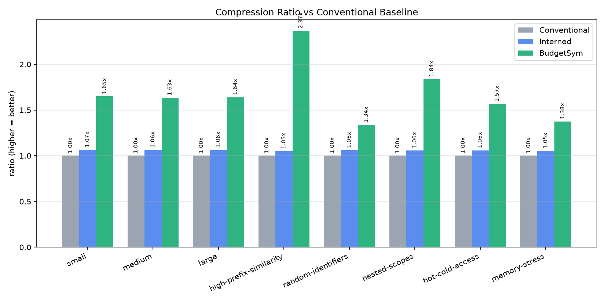
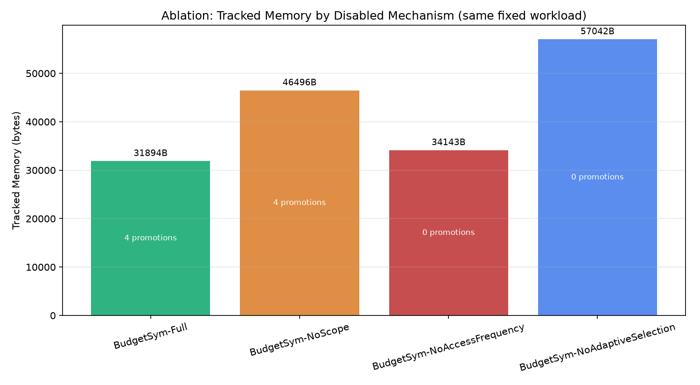

An Adaptive Scope-Aware Symbol Table for Memory-Bounded Embedded Compilation
Does a per-symbol adaptive representation policy — driven by memory pressure, scope/lifetime,
and access frequency — measurably beat a conventional symbol table and plain string interning
on the same workload? Tested with a working C++ prototype, two real baselines, 8 benchmark datasets,
and a 4-variant ablation study. Every number in this deck comes from actually running that code.
1.24–2.37×
tracked memory vs conventional
3
representations: INLINE / INTERNED / COMPRESSED
1418
lines of C++14, header-only core
2
real toolchain/logic bugs caught & fixed
Minute 1
The Problem
Embedded compilation environments have constrained memory, while conventional symbol tables can
carry significant string, metadata, and indexing overhead.
A compiler targeting a memory-bounded embedded platform faces a trade-off its desktop-scale
counterpart usually doesn't have to make:
It cannot always afford a conventional symbol table's peak memory for a large translation unit.
It also cannot uniformly pay a compression scheme's lookup-time cost for every identifier
— including ones on a hot path, like a loop counter inside an interrupt handler.
Neither extreme (always fast / always compact) fits this constraint well on its own. That gap is
what this project investigates — empirically, with a working implementation, not just in theory.
Minute 2
Existing Approaches & Their Limitation
Technique
What it does
Measured here (vs conventional baseline)
Conventional hash table
unordered_map<string, Symbol>, one full string copy per symbol
1.00× (the reference point)
String interning
Shared, refcounted pool; symbols hold a small index instead of a copy
Not benchmarked standalone — used here as one of three per-symbol choices, not a whole-table strategy
The limitation, stated plainly
None of these make a representation decision using a unified, compiler-aware
memory-budget policy that also reacts to how a symbol is actually used at runtime.
Interning only helps on exact repeats — and most identifiers in a translation unit are declared
once. A uniform compression scheme doesn't ask whether a specific identifier is worth the lookup-time
cost right now.
Minute 3
Our Proposed Architecture
Not novel: interning, front-coding, and scope-stack symbol tables are all
established techniques, used here as baselines or as one representation among three.
Proposed: the unified policy that chooses between them per symbol, and adapts the
choice after insertion based on real access counts.
Full component-to-file map in docs/architecture.md.
Minute 4
Live Demonstration — ./budget_sym_demo.exe
Every number below is real, computed output from actually running the insert/lookup/scope
operations shown — nothing here is scripted text.
Insertion + representation decisions — 6 identifiers, watch different
ones land on different representations:
Memory saved vs conventional — computed by building a real
ConventionalSymbolTable on the same 6 symbols and diffing tracked memory: ~49% saved.
Nested scope — 20 symbols inserted into a child scope, then
exitScope(): real, nonzero Symbols released / Memory reclaimed printed.
Adaptive promotion — 3 long, prefix-similar identifiers inserted (some land
COMPRESSED), the hot one looked up 3×: watch it flip to INTERNED live,
re-queried and printed after the accesses.
Lookup test — FOUND / FOUND / NOT FOUND, including a genuine miss.
Minute 5
Experimental Plan

Compression ratio vs conventional — every dataset, both baselines beaten

Ablation: Full (33,581B) vs NoAdaptiveSelection / "just intern" (50,642B)
Honest cost, shown unprompted (see figures/lookup_latency.png): BudgetSym's
lookup is slower than both baselines on most datasets — the hash-then-reconstruct lookup path every
entry uses. This is a memory-for-latency trade, not a strict win on every axis.
Next steps (docs/experiment_plan.md): multi-seed
statistical significance testing, real embedded-codebase identifier traffic instead of synthetic
datasets, a threshold sweep over the policy's hand-picked constants.
Backup — Anticipated Questions
Faculty Q&A
What exactly is novel?
Not any single representation. The unified policy combining memory pressure, scope/lifetime,
exact-repeat status, and prefix similarity into one per-symbol decision — plus post-insertion
promotion driven by real access counts.
Why not just use a trie / string interning?
Both are measured baselines here, not straw men. Plain interning only reaches ~1.05–1.07×
across every dataset because it only helps on exact repeats. A trie compresses uniformly and can't
natively "un-compress" one entry that turns out to be hot without restructuring.
How are you measuring memory?
"Tracked Memory" — a documented, deterministic cost model computed from real stored data
lengths + fixed metadata constants, consistent across all three implementations. Explicitly not OS
RSS; stated as such everywhere it's printed (docs/methodology.md).
Does compression hurt lookup?
Yes, measurably — BudgetSym's lookup_success_us is consistently higher than both baselines
in results/benchmark_results.csv. That's exactly why the promotion mechanic exists.
How will you prove this is better?
We don't claim proof — a measured result on 8 synthetic workloads, reported honestly including
where it isn't strictly better. Multi-seed statistics + real compiler traffic are the concrete next step.